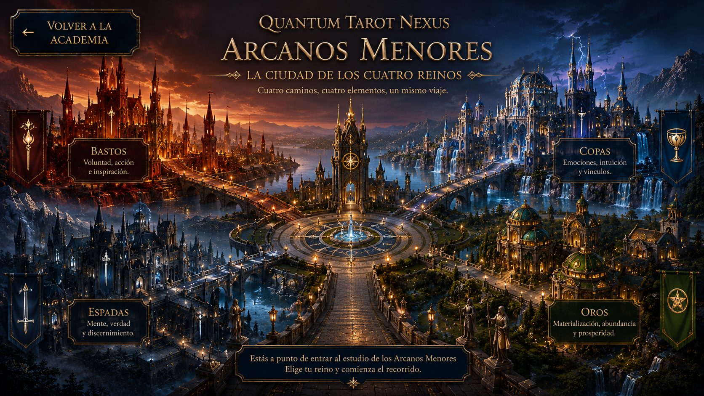

01
La Ciudad de los Cuatro Reinos
Estructura de los Arcanos Menores, elementos, números y figuras de la corte.

Volver a la Academia Explorar el cursoNivel 4 de 7
«Cada reino revela una parte del mundo. Dominar los cuatro es aprender a leer la totalidad de la experiencia humana».
Has cruzado el puente que separa el conocimiento de la práctica. Frente a ti se alza la Ciudad de los Cuatro Reinos, donde Bastos, Copas, Espadas y Oros representan las acciones, emociones, pensamientos y recursos que conforman la vida cotidiana. Comprender sus vínculos te permitirá construir lecturas más profundas, coherentes y conectadas con la realidad.
Estructura de los Arcanos Menores, elementos, números y figuras de la corte.
Voluntad, creatividad, acción, inspiración y crecimiento.
Emociones, vínculos, intuición, amor y mundo afectivo.
Pensamiento, decisiones, verdad, materia, recursos y prosperidad.
Combinación de los palos y construcción de interpretaciones coherentes.
José Gabriel Ortega
Biólogo, docente universitario y lector de Tarot con más de quince años de experiencia.
Fundador de Quantum Tarot Nexus, una propuesta que integra el simbolismo, la reflexión y una mirada contemporánea del Tarot.
«Mi propósito es ayudarte a comprender los Arcanos Menores como un lenguaje vivo que refleja las experiencias, decisiones y vínculos de la vida cotidiana».
Las puertas de la Ciudad de los Cuatro Reinos están preparadas. Aquí comenzará la experiencia interactiva de Arcanos Menores.
✦ Comenzar el recorridoEl enlace del curso se incorporará cuando el Genially esté publicado.